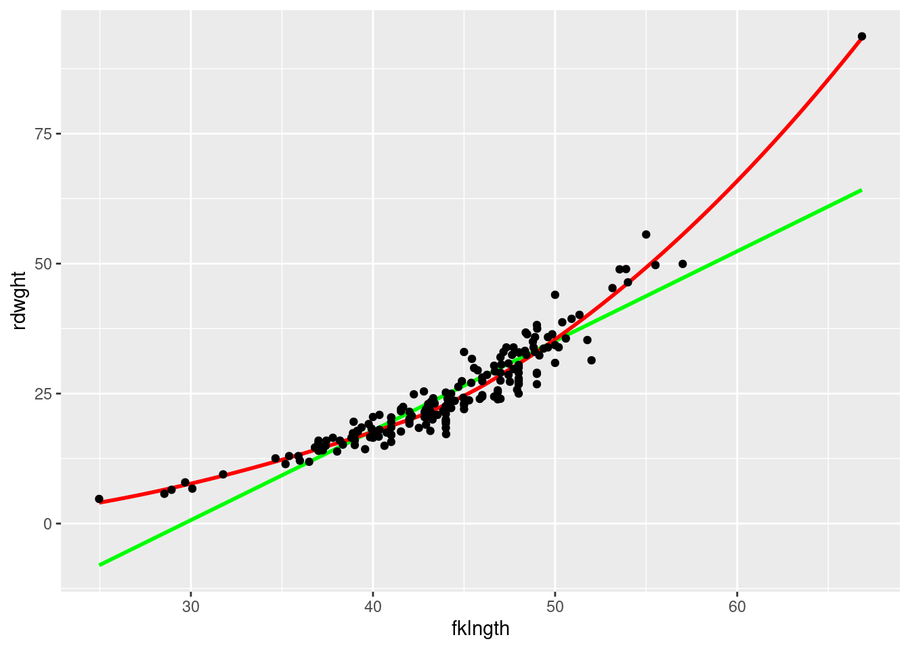
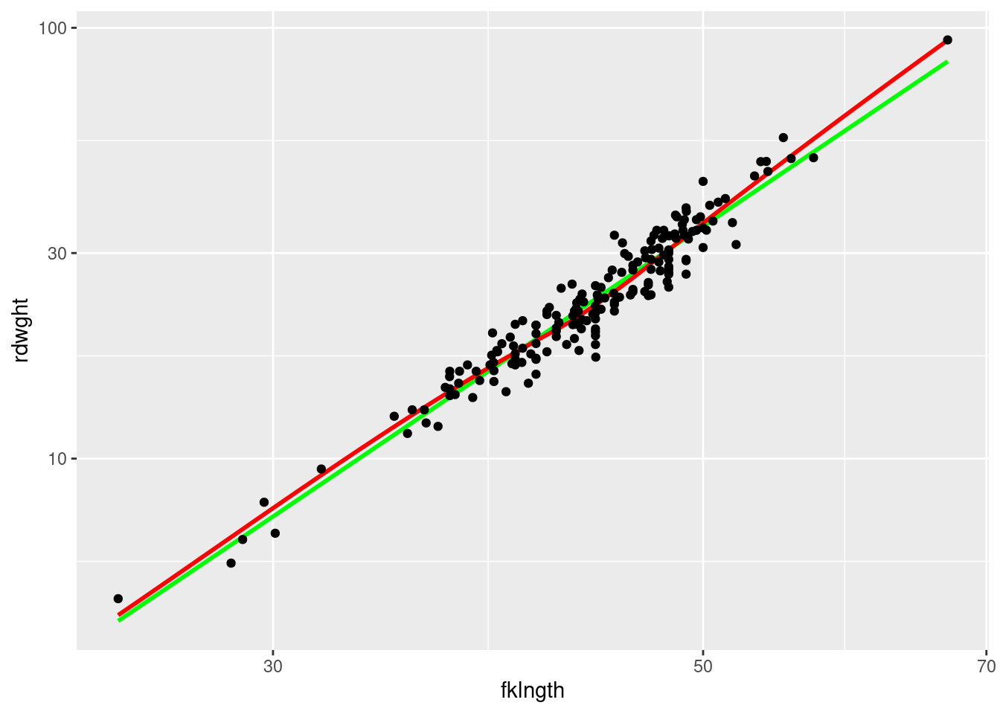
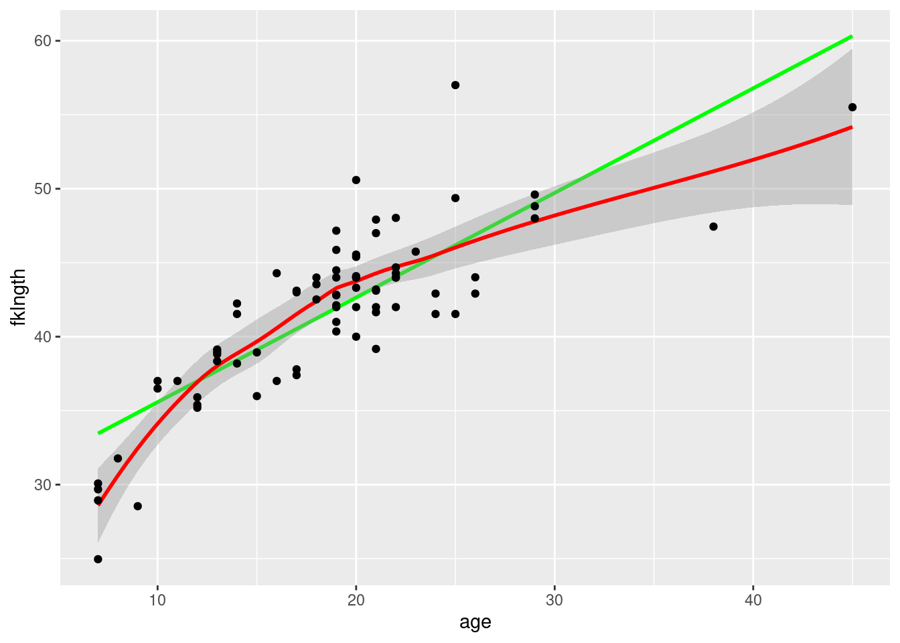
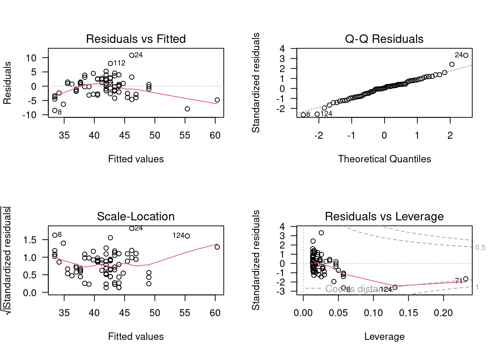
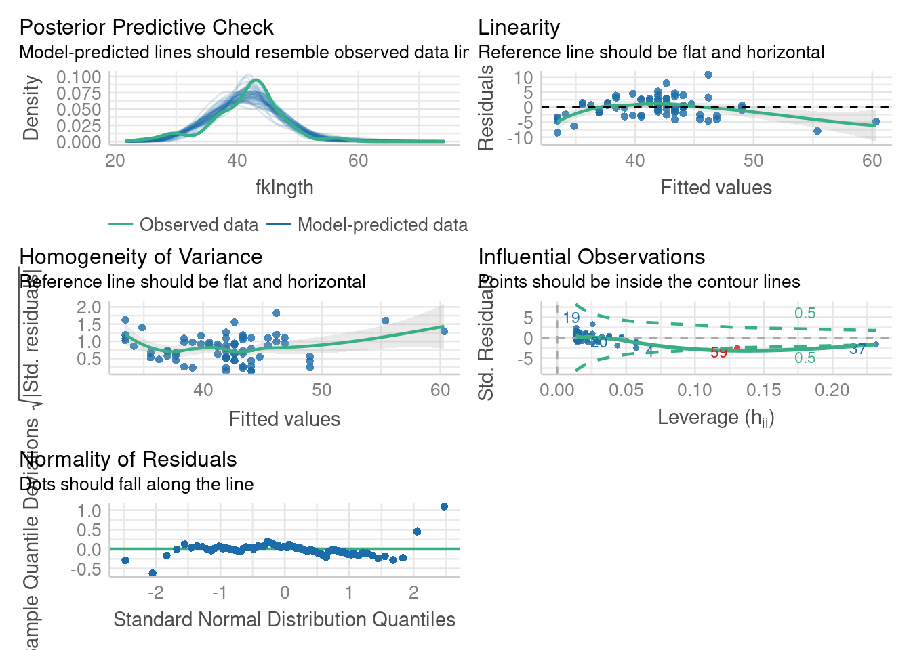

3 Correlation and simple linear regression
After completing this laboratory exercise, you should be able to:
- Use R to produce a scatter plot of the relationship between two variables.
- Use R to carry out some simple data transformations.
- Use R to compute the Pearson product-moment correlation between two variables and assess its statistical significance.
- Use R to compute the correlation between pairs of ranked vari- ables using the Spearman rank correlation and Kendall’s tau.
- Use R to assess the significance of pairwise comparisons from a generalized correlation matrix using Bonferroni-adjusted proba- bilities.
- Use R do a simple linear regression
- Use R to test the validity of the assumptions underlying simple lin- ear regression
- Use R to assess significance of a regression by the bootstrap method
- Quantify effect size in simple regression and perform a power analysis using G*Power
3.1 R packages and data
For this la b you need:
- R packages:
- car
- lmtest
- boot
- pwr
- ggplot
- performance
- data:
- sturgeon.csv
You need to load the packages in R with library() and if need needed install them first with install.packages() For the data, load them using the read.csv() function.
Note that the command to read the data assumes that the data file is in a folder named data within the working directory. Adjust as needed.
3.2 Scatter plots
Correlation and regression analysis should always begin with an examination of the data: this is a critical first step in determining whether such analyses are even appropriate for your data. Suppose we are interested in the extent to which length of male sturgeon in the vicinity of The Pas and Cumberland House covaries with weight. To address this question, we look at the correlation between fklngth and rdwght. Recall that one of the assumptions in correlation analysis is that the relationship between the two variables is linear. To evaluate this assumption, a good first step is to produce a scatterplot.
- Load the data from
sturgeon.csvin an obk=jcet namedsturgeon. Make a scatter plot ofrdwghtvsfklngthfit with a locally weighted regression (Loess) smoother, and a linear regression line.
'data.frame': 186 obs. of 9 variables:
$ fklngth : num 37 50.2 28.9 50.2 45.6 ...
$ totlngth: num 40.7 54.1 31.3 53.1 49.5 ...
$ drlngth : num 23.6 31.5 17.3 32.3 32.1 ...
$ rdwght : num 15.95 NA 6.49 NA 29.92 ...
$ age : int 11 24 7 23 20 23 20 7 23 19 ...
$ girth : num 40.5 53.5 31 52.5 50 54.2 48 28.5 44 39 ...
$ sex : chr "MALE" "FEMALE" "MALE" "FEMALE" ...
$ location: chr "THE_PAS" "THE_PAS" "THE_PAS" "THE_PAS" ...
$ year : int 1978 1978 1978 1978 1978 1978 1978 1978 1978 1978 ...mygraph <- ggplot(
data = sturgeon[!is.na(sturgeon$rdwght), ], # source of data
aes(x = fklngth, y = rdwght)
)
# plot data points, regression, loess trace
mygraph <- mygraph +
stat_smooth(method = lm, se = FALSE, color = "green") + # add linear regression, but no SE shading
stat_smooth(color = "red", se = FALSE) + # add loess
geom_point() # add data points
mygraph # display graph
- Does this curve suggest a good correlation between the two? Based on visual inspection, does the relationship between these two variables appear linear?
There is some evidence of nonlinearity, as the curve appears to have a positive second derivative (concave up). This notwithstanding, it does appear the two variables are highly correlated.
- Redo the scatterplot, but after logtransformation of both axes.
# apply log transformation on defined graph
mygraph + scale_x_log10() + scale_y_log10()
Compare the diagrams before and after the transformation (Figs @ref(fig:stur-2) and @ref(fig:stur-log)). Since the relationship is more linear after transformation, correlation analysis should be done on the transformed data
3.3 Data transformations and the product-moment correlation
Recall that another assumption underlying significance testing of the product-moment correlation is that the distribution of the two variables in question is bivariate normal. We can test to see whether each of the two variables are normally distributed using the same procedures outlined in the exercise on two-sample comparisons. If the two variables are each normally distributed, then one is usually (relatively) safe in assuming the joint distribution is normal, although this needn’t necessarily be true.
- Examine the distribution of the 4 variables (the two original variables and the log-transformed variables). What do you conclude from visual inspection of these plots?
The following graph contains the 4 QQ plots (qqplot()). It was produced by the code below that starts with the par() command to ensure that all 4 plots would appear together on the same page in 2 rows and 2 columns:
par(mfrow = c(2, 2)) # split graph in 4 (2 rows, 2 cols) filling by rows
qqnorm(sturgeon$fklngth, ylab = "fklngth")
qqline(sturgeon$fklngth)
qqnorm(log10(sturgeon$fklngth), ylab = "log10(fklngth)")
qqline(log10(sturgeon$fklngth))
qqnorm(sturgeon$rdwght, ylab = "rdwght")
qqline(sturgeon$rdwght)
qqnorm(log10(sturgeon$rdwght), ylab = "log10(rdwgth)")
qqline(log10(sturgeon$rdwght))
None of these distributions are perfectly normal, but deviations are mostly minor.
- To generate a scatterplot matrix of all pairs of variables, with linear regression and lowess traces, you can use
scatterplotMatrixfromcar`r emo::ji(“package”).
scatterplotMatrix(
~ fklngth + log10(fklngth) + rdwght + log10(rdwght),
data = sturgeon,
smooth = TRUE, diagonal = "density"
)Warning in applyDefaults(diagonal, defaults = list(method = "adaptiveDensity"),
: unnamed diag arguments, will be ignored
- Next, calculate the Pearson product-moment correlation between each pair (untransformed and log transformed) using the
cor()command. However, to do this, it will be easier if you first add your transformed data as columns in the sturgeon data frame.
Then you can get the correlation matrix by:
Note the use="complete.obs" parameter. It tells R to keep only lines of the data frame where all variables were measured. If there are missing data, some lines will be removed, but correlations will be calculated for the same subset of cases for all pairs of variables. One could use, instead, use="pairwise.complete.obs" , to tell R to only eliminate observations when values are missing for this particular pair of variables. In this situation, if there are missing values in the data frame, the sample size for pairwise correlations will vary. In general, I recommend you use the option use="complete.obs", unless you have so many missing values that it eliminates the majority of your data.
- Why is the correlation between the untransformed variables smaller than between the transformed variables?
fklngth lfklngth lrdwght rdwght
fklngth 1.0000000 0.9921435 0.9645108 0.9175435
lfklngth 0.9921435 1.0000000 0.9670139 0.8756203
lrdwght 0.9645108 0.9670139 1.0000000 0.9265513
rdwght 0.9175435 0.8756203 0.9265513 1.0000000Several things should be noted here.
- the correlation between fork length and round weight is high, regardless of which variables are used: so as might be expected, heavier fish are also longer, and vice versa
- the correlation is greater for the transformed variables than the untransformed variables.
Why? Because the correlation coefficient is inversely proportional to the amount of scatter around a straight line. If the relationship is curvilinear (as it is for the untransformed data), the scatter around a straight line will be greater than if the relationship is linear. Hence, the correlation coefficient will be smaller.
3.4 Testing the significance of correlations and Bonferroni probabilities
It’s possible to test the significance of individual correlations using the commands window. As an example, let’s try testing the significance of the correlation between lfklngth and rdwght (the smallest correlation in the above table).
- In the R script window, enter the following to test the correlation between
lfkgnthandrdwght:
cor.test(
sturgeon$lfklngth, sturgeon$rdwght,
alternative = "two.sided",
method = "pearson"
)
Pearson's product-moment correlation
data: sturgeon$lfklngth and sturgeon$rdwght
t = 24.322, df = 180, p-value < 2.2e-16
alternative hypothesis: true correlation is not equal to 0
95 percent confidence interval:
0.8367345 0.9057199
sample estimates:
cor
0.8756203 We see here that the correlation is highly significant (\(p< 2.2e-16\)), which is no surprise given how high the correlation coefficient is (0.8756).
It’s important to bear in mind that when you are estimating correlations, the probability of finding any one correlation that is “significant” by pure chance increases with the number of pairwise correlations examined. Suppose, for example, that you have five variables; there are then a total of 10 possible pairwise correlations, and from this set, you would probably not be surprised to find at least one that is “significant” purely by chance. One way of avoiding the problem is to adjust individual \(\alpha\) levels for pairwise correlations by dividing by the number of comparisons, k, such that: \(\alpha' = \frac{\alpha}{k}\) (Bonferroni probabilities), i.e. if initially, \(\alpha = 0.05\) and there are a total of 10 comparisons, then \(\alpha'= 0.005\).
In the above example where we examined correlations between fklngth and rdwght and their log, it would be appropriate to adjust the \(\alpha\) at which significance is tested by the total number of correlations in the matrix (in this case, 6, so \(\alpha'=0.0083\)). Does your decision about the significance of the correlation between lfklngth and rdwght change?
3.5 Non-parametric correlations: Spearman’s rank and Kendall’s \(\tau\)
The analysis done with the sturgeon data in the section above suggests that one of the assumptions of correlation, namely, bivariate normality, may not be valid for fklngth and rdwght nor for the log transforms of these variables. Finding an appropriate transformation is sometimes like looking for a needle in a haystack; indeed, it can be much worse simply because for some distributions, there is no transformation that will normalize the data. In such cases, the best option may be to go to a non-parametric analysis that does not assume bivariate normality or linearity. All such correlations are based on the ranks rather than the data themselves: two options available in R are Spearman and Kendall’s \(\tau\) (tau).
- Test the correlation between
fklngthandrdwghtusing both the Spearman and Kendall’s tau. The following commands will produce the correlations:
cor.test(
sturgeon$lfklngth, sturgeon$rdwght,
alternative = "two.sided",
method = "spearman"
)Warning in cor.test.default(sturgeon$lfklngth, sturgeon$rdwght, alternative =
"two.sided", : Cannot compute exact p-value with ties
Spearman's rank correlation rho
data: sturgeon$lfklngth and sturgeon$rdwght
S = 47971, p-value < 2.2e-16
alternative hypothesis: true rho is not equal to 0
sample estimates:
rho
0.9522546 cor.test(
sturgeon$lfklngth, sturgeon$rdwght,
alternative = "two.sided",
method = "kendall"
)
Kendall's rank correlation tau
data: sturgeon$lfklngth and sturgeon$rdwght
z = 16.358, p-value < 2.2e-16
alternative hypothesis: true tau is not equal to 0
sample estimates:
tau
0.8208065 Contrast these results with those obtained using the Pearson product-moment correlation. Why the difference?
Test the non-parametric correlations on pairs of the transformed variables. You should immediately note that the non-parametric correlations are identical for untransformed and transformed variables. This is because we are using the ranks, rather than the raw data, and the rank ordering of the data does not change when a transformation is applied to the raw values.
Note that the correlations for Kendall’s tau (0.820) are lower than for the Spearman rank (0.952) correlation. This is because Kendall’s gives more weight to ranks that are far apart, whereas Spearman’s weights each rank equally. Generally, Kendalls’s is more appropriate when there is more uncertainty about the reliability of close ranks.
The sturgeons in this sample were collected using nets and baited hooks of a certain size. What impact do you think this method of collection had on the shapes of the distributions of fklngth and rdwght ? Under these circumstances, do you think correlation analysis is appropriate at all?
Note that correlation analysis assumes that each variable is randomly sampled. In the case of sturgeon, this is not the case: baited hooks and nets will only catch sturgeon above a certain minimum size. Note that in the sample, there are no small sturgeons, since the fishing gear targets only larger fish. Thus, we should be very wary of the correlation coefficients associated with our analysis, as the inclusion of smaller fish may well change our estimate of these correlations.
3.6 Simple linear regression
In correlation analysis we are interested in how pairs of variables covary: However, in regression analysis, we are attempting to estimate a model that predicts a variable (the dependent variable) from another variable (the independent variable).
As with any statistical analysis, the best way to begin is by looking at your data. If you are interested in the relationship between two variables, say, Y and X, produce a plot of Y versus X just to get a “feel” for the relationship.
- The data file
sturgeon.csvcontains data for sturgeons collected from 1978-1980 at Cumberland House, Saskatchewan and The Pas, Manitoba. Make a scatterplot offklngth(the dependent variable) versusage(the independent variable) for males and add a linear regression and a loess smoother. What do you conclude from this plot?
sturgeon.male <- subset(sturgeon, subset = sex == "MALE")
mygraph <- ggplot(
data = sturgeon.male, # source of data
aes(x = age, y = fklngth)
) # aesthetics: y=fklngth, x=rdwght
# plot data points, regression, loess trace
mygraph <- mygraph +
stat_smooth(method = lm, se = FALSE, color = "green") + # add linear regression, but no SE shading
stat_smooth(color = "red") + # add loess
geom_point() # add data points
mygraph # display graph
This suggests that the relationship between age and fork length is not linear.
Suppose that we want to know the growth rate of male sturgeon. One estimate (perhaps not a very good one) of the growth rate is given by the slope of the fork length - age regression.
First, let’s run the regression with the lm() command, and save its results in an object called RegModel.1.
RegModel.1 <- lm(fklngth ~ age, data = sturgeon.male)Nothing appears on the screen, but don’t worry, it all got saved in memory. To see the statistical results, type:
summary(RegModel.1)
Call:
lm(formula = fklngth ~ age, data = sturgeon.male)
Residuals:
Min 1Q Median 3Q Max
-8.4936 -2.2263 0.1849 1.7526 10.8234
Coefficients:
Estimate Std. Error t value Pr(>|t|)
(Intercept) 28.50359 1.16873 24.39 <2e-16 ***
age 0.70724 0.05888 12.01 <2e-16 ***
---
Signif. codes: 0 '***' 0.001 '**' 0.01 '*' 0.05 '.' 0.1 ' ' 1
Residual standard error: 3.307 on 73 degrees of freedom
(5 observations deleted due to missingness)
Multiple R-squared: 0.664, Adjusted R-squared: 0.6594
F-statistic: 144.3 on 1 and 73 DF, p-value: < 2.2e-16R output gives you:
-
Call:A friendly reminder of the model fitted and the data used. -
Residuals:General statistics about the residuals around the fitted model. -
Coefficients:Fitted model parameter estimates, standard errors, t values and associated probabilities. -
Residual standard error:Square root of the residual variance. -
Multiple R-squared:Coefficient of determination. It corresponds to the proportion of the total variance of the dependent variable that is accounted for by the regression (i.e. by the independent variable) -
Adjusted R-squared:The adjusted R-squared accounts for the number of parameters in the model. If you want to compare the performance of several models with different numbers of parameters, this is the one to use -
F-statistic:This is the test of the overall significance of the model. In the simple regression case, this is the same as the test of the slope of the regression.
The estimated regression equation is therefore:
\[ Fklngth = 28.50359 + 0.70724 * age\]
Given the highly significant F-value of the model (or equivalently the highly significant t-value for the slope of the line), we reject the null hypothesis that there is no relationship between fork length and age.
3.6.1 Testing regression assumptions
Simple model I regression makes four assumptions:
- the X variable is measured without error;
- the relationship between Y and X is linear;
- that for any value of X, the Y’s are independently and normally distributed;
- the variance of Y for fixed X is independent of X.
Having done the regression, we can now test the assumptions. For most biological data, the first assumption is almost never valid; usually there is error in both Y and X. This means that in general, slope estimates are biased, but predicted values are unbiased. However, so long as the error in X is small relative to the range of X in your data, the fact that X has an associated error is not likely to influence the outcome dramatically. On the other hand, if there is substantial error in X, regression results based on a model I regression may give poor estimates of the functional relationship between Y and X. In this case, more sophisticated regression procedures must be employed which are, unfortunately, beyond the scope of this course.
The other assumptions of a model I regression can, however, be tested, or at least evaluated visually. The plot() command can display diagnostics for linear models.
The par() command is used here to tell R to display 2 rows and 2 columns of graphs per page (there are 4 diagnostic graphs for linear models generated automatically), and the last statement is to tell R to rotate the labels of the Y axis so that they are perpendicular to the Y axis. (Yes, I know, this is not at all obvious.)
You will get:

- Upper left tell you about linearity, normality, and homoscedasticity of the residuals. It shows the deviations around the regression vs the predicted values. Remember that the scatterplot ( fklngth vs age ) suggested that the relationship between fork length and age is not linear. Very young and very old sturgeons tended to fall under the line, and fish of average age tended to be a bit above the line. This is exactly what the residual vs fitted plot shows. The red line is a lowess trace through these data. If the relationship was linear, it would be approximately flat and close to 0. The scatter of residuals tells you a bit about their normality and homoscedasticity, although this graph is not the best way to look at these properties. The next two are better.
- Upper right is to assess the normality of the residuals. It is a QQ plot of the residuals . If the residuals were normally distributed, they would fall very close to the diagonal line. Here, we see it is mostly the case, except in the tails
- Bottom left titled Scale-Location, helps with assessing homoscedasticity. It plots the square root of the absolute value of the standardized residual (residual divided by the standard error of the residuals, this scales the residuals so that their variance is 1 ) as a function of the fitted value. This graph can help you visualize whether the spread of the residuals is constant or not. If residuals are homoscedastic, then the average will not change with increasing fitted values. Here, there is slight variability, but it is not monotonous (i.e. it does not increase or decrease systematically) and there is no strong evidence against the assumption of homoscedasticity.
- Bottom right plots the residuals as a function of leverage and can help detecting the presence of outliers or points that have a very strong influence on the regression results. The leverage of a point measures how far it is from the other points, but only with respect to the independent variable. In the case of simple linear regression, it is a function of the difference between the observation and the mean of the independent variable. You should look more closely at any observation with a leverage value that is greater than: \(2(k+1)/n\), where $\(k\) is the number of independent variables (here 1), and \(n\) is the number of observations. In this case there is 1 independent variable, 75 observations, and points with a leverage higher than 0.053 may warrant particular scrutiny. The plot also gives you information about how the removal of a point from the data set would change the predictions. This is measured by the Cook’s distance, illustrated by the red lines on the plot. A data point with a Cook distance larger than 1 has a large influence.
Note that R automatically labels the most extreme cases on each of these 4 plots. It does not mean that these cases are outliers, or that you necessarily need be concerned with them. In any data set, there will always be a minimum and a maximum residual.
The R package performance offers a new and updated version of those graphs with colours and more plots to help visually assess the assumptions with the function model_check()
check_model(RegModel.1)
So, what is the verdict about the linear regression between fklngth and age ? It fails the linearity, possibly fails the normality, passes homoscedasticity, and this does not seem to be too strongly affected by some bizarre points.
3.6.2 Formal tests of regression assumptions
In my practice, I seldom use formal tests of regression assumptions and mostly rely on graphs of the residuals to guide my decisions. To my knowledge, this is what most biologists and data analysts do. However, in my early analyst life I was not always confident that I was interpreting these graphs correctly and wished that I had a formal test or a statistic quantifying the degree of deviation from the regression assumptions.
The lmtest R package, not part of the base R installation, but available from CRAN, contains a number of tests for linearity and homoscedasticity. And one can test for normality using the Shapiro-Wilk test seen previously.
First, you need to load (and maybe install) the lmtest package.
library(lmtest)Run the following commands
bptest(RegModel.1)
studentized Breusch-Pagan test
data: RegModel.1
BP = 1.1765, df = 1, p-value = 0.2781The Breusch-Pagan test examines whether the variability of the residuals is constant with respect to increasing fitted values. A low p value is indicative of heteroscedasticity. Here, the p value is high, and supports my visual assessment that the homoscedasticity assumption is met by these data.
dwtest(RegModel.1)
Durbin-Watson test
data: RegModel.1
DW = 2.242, p-value = 0.8489
alternative hypothesis: true autocorrelation is greater than 0The Durbin-Watson test can detect serial autocorrelation in the residuals. Under the assumption of no autocorrelation, the D statistic is 2. This test can detect violation of independence of observations (residuals), although it is not foolproof. Here there is no problem identified.
resettest(RegModel.1)
RESET test
data: RegModel.1
RESET = 14.544, df1 = 2, df2 = 71, p-value = 5.082e-06The RESET test is a test of the assumption of linearity. If the linearity assumption is met, the RESET statistic will be close to 1. Here, the statistic is much larger (14.54), and very highly significant. This confirms our visual assessment that the relationship is not linear.
shapiro.test(residuals(RegModel.1))
Shapiro-Wilk normality test
data: residuals(RegModel.1)
W = 0.98037, p-value = 0.2961The Shapiro-Wilk normality test on the residual confirms that the deviation from normality of the residuals is not large.
3.7 Data transformations in regression
The analysis above revealed that the linearity assumption underlying regression analysis is not met by the fklngth - age data. If we want to use regression analysis, data transformations are required:
Let’s plot the log-transformed data
par(mfrow = c(1, 1), las = 1)
ggplot(
data = sturgeon.male,
aes(x = log10(age), y = log10(fklngth))
) +
geom_smooth(color = "red") +
geom_smooth(method = "lm", se = FALSE, color = "green") +
geom_point()
We can fit the linear regression model on the log-transformed variables.
Call:
lm(formula = log10(fklngth) ~ log10(age), data = sturgeon.male)
Residuals:
Min 1Q Median 3Q Max
-0.082794 -0.016837 -0.000719 0.021102 0.087446
Coefficients:
Estimate Std. Error t value Pr(>|t|)
(Intercept) 1.19199 0.02723 43.77 <2e-16 ***
log10(age) 0.34086 0.02168 15.72 <2e-16 ***
---
Signif. codes: 0 '***' 0.001 '**' 0.01 '*' 0.05 '.' 0.1 ' ' 1
Residual standard error: 0.03015 on 73 degrees of freedom
(5 observations deleted due to missingness)
Multiple R-squared: 0.772, Adjusted R-squared: 0.7688
F-statistic: 247.1 on 1 and 73 DF, p-value: < 2.2e-16Note that by using the log transformed data, the proportion of variation explained by the regression has increased by 10% (from 0.664 to 0.772), a substantial increase. So the relationship has become more linear. Good. Let’s look at the residual diagnostic plots:
So things appear a little better than before, although still not ideal. For example, the Residual vs fitted plot still suggests a potential nonlinearity. The QQ plot is nicer than before, indicating that residuals are more normally distributed after the log-log transformation. There is no indication of heteroscedasticity. And, although there are still a few points with somewhat high leverage, none have a Cook’s distance above 0.5. It thus seems that transforming data improved things: more linear, more normal, less dependence on extreme data. Do the formal tests support this visual assessment?
bptest(RegModel.2)
studentized Breusch-Pagan test
data: RegModel.2
BP = 0.14282, df = 1, p-value = 0.7055dwtest(RegModel.2)
Durbin-Watson test
data: RegModel.2
DW = 2.1777, p-value = 0.6134
alternative hypothesis: true autocorrelation is greater than 0resettest(RegModel.2)
RESET test
data: RegModel.2
RESET = 4.4413, df1 = 2, df2 = 71, p-value = 0.01523shapiro.test(residuals(RegModel.2))
Shapiro-Wilk normality test
data: residuals(RegModel.2)
W = 0.98998, p-value = 0.8246Indeed, they do: residuals are still homoscedastic (Breusch-Pagan test), show no autocorrelation (Durbin-Watson test), are normal (Shapiro-Wilk test), and they are more linear (p value of the RESET test is now 0.015, instead of 0.000005). Linearity has improved, but is still violated somewhat.
3.8 Dealing with outliers
In this case, there are no real clear outliers. Yes, observations 8, 24, and 112 are labeled as the most extreme in the last set of residual diagnostic plots. But they are still within what I consider the “reasonable” range. But how does one define a limit to the reasonable? When is an extreme value a real outlier we have to deal with? Opinions vary about the issue, but I favor conservatism.
My rule is that, unless the value is clearly impossible or an error in data entry, I do not delete “outliers”; rather, I analyze all my data. Why? Because, I want my data to reflect natural or real variability. Indeed, variability is often what interests biologists the most.
Keeping extreme values is the fairest way to proceed, but it often creates other issues. These values will often be the main reason why the data fail to meet the assumptions of the statistical analysis. One solution is to run the analysis with and without the outliers, and compare the results. In many cases, the two analyses will be qualitatively similar: the same conclusions will be reached, and the effect size will not be very different. Sometimes, however, this comparison will reveal that the presence of the outliers changes the story. The logical conclusion then is that the results depend on the outliers and that the data at hand are not very conclusive. As an example, let’s rerun the analysis after eliminating observations labeled 8, 24, and 112.
RegModel.3 <- lm(log10(fklngth) ~ log10(age), data = sturgeon.male, subset = !(rownames(sturgeon.male) %in% c("8", "24", "112")))
summary(RegModel.3)
Call:
lm(formula = log10(fklngth) ~ log10(age), data = sturgeon.male,
subset = !(rownames(sturgeon.male) %in% c("8", "24", "112")))
Residuals:
Min 1Q Median 3Q Max
-0.069163 -0.017390 0.000986 0.018590 0.047647
Coefficients:
Estimate Std. Error t value Pr(>|t|)
(Intercept) 1.22676 0.02431 50.46 <2e-16 ***
log10(age) 0.31219 0.01932 16.16 <2e-16 ***
---
Signif. codes: 0 '***' 0.001 '**' 0.01 '*' 0.05 '.' 0.1 ' ' 1
Residual standard error: 0.02554 on 70 degrees of freedom
(5 observations deleted due to missingness)
Multiple R-squared: 0.7885, Adjusted R-squared: 0.7855
F-statistic: 261 on 1 and 70 DF, p-value: < 2.2e-16The intercept, slope, and R squared are about the same, and the significance of the slope is still astronomical. Removing the “outliers” has little effect in this case.
As for the diagnostic residual plots and the formal tests of assumptions:

bptest(RegModel.3)
studentized Breusch-Pagan test
data: RegModel.3
BP = 0.3001, df = 1, p-value = 0.5838dwtest(RegModel.3)
Durbin-Watson test
data: RegModel.3
DW = 2.0171, p-value = 0.5074
alternative hypothesis: true autocorrelation is greater than 0resettest(RegModel.3)
RESET test
data: RegModel.3
RESET = 3.407, df1 = 2, df2 = 68, p-value = 0.0389shapiro.test(residuals(RegModel.3))
Shapiro-Wilk normality test
data: residuals(RegModel.3)
W = 0.98318, p-value = 0.4502No real difference either. Overall, this suggests that the most extreme values do not have undue influence on the results.
3.9 Quantifying effect size in regression and power analysis
Biological interpretation differs from statistical interpretation. Statistically, we conclude that size increase with age (i.e. the slope is positive and different from 0). But this conclusion alone does not tell if the difference between young and old fish is large. The slope and the scatterplot are more informative than the p-value here. The slope (in log-log space) is 0.34. This means that for each unit increase of X (log10(age)), there is an increase of 0.34 units of log10(fklngth). In other words, when age is multiplied by 10, fork length is multiplied by about 2 (10^0.34^). Humm, length increases more slowly than age. This slope value (0.34) is an estimate of raw effect size. It measure how much length changes with age.
It would also be important to estimate the confidence interval around the estimate of the slope. This can beobtained using the confint() function.
confint(RegModel.2) 2.5 % 97.5 %
(Intercept) 1.1377151 1.246270
log10(age) 0.2976433 0.384068The 95% confidence interval for the slope is 0.29-0.38. It is quite narrow and include only values far from zero.
3.9.1 Power to detect a given slope
You can compute power with G*Power for some slope value that you deem of sufficient magnitude to warrant detection.
- Go to t Tests: Linear bivariate regression: One group, size of slope.
- Select Post hoc: Compute achieved power- given \(\alpha\), sample size,and effect size
For example, suppose that sturgeon biologists deem that a slope of 0.1 for the relationship between log10(fklngth) and log10(age) is meaningful and you wanted to estimate the power to detect such a slope with a sample of 20 sturgeons. Results from the log-log regression contain most of what you need:
summary(RegModel.2)
Call:
lm(formula = log10(fklngth) ~ log10(age), data = sturgeon.male)
Residuals:
Min 1Q Median 3Q Max
-0.082794 -0.016837 -0.000719 0.021102 0.087446
Coefficients:
Estimate Std. Error t value Pr(>|t|)
(Intercept) 1.19199 0.02723 43.77 <2e-16 ***
log10(age) 0.34086 0.02168 15.72 <2e-16 ***
---
Signif. codes: 0 '***' 0.001 '**' 0.01 '*' 0.05 '.' 0.1 ' ' 1
Residual standard error: 0.03015 on 73 degrees of freedom
(5 observations deleted due to missingness)
Multiple R-squared: 0.772, Adjusted R-squared: 0.7688
F-statistic: 247.1 on 1 and 73 DF, p-value: < 2.2e-16Note the Residual standard error value (0.03015). You will need this. The other thing you need is an estimate of the standard deviation of log10(age). R can (of course) compute it. Be careful, the sd() function will return NA if there are missing values. You can get around this by adding na.rm=TRUE as an argument ot the sd() function.
You can then enter these values (slope to be detected, sample size, alpha, standard deviation of the independent variable) to calculate another quantity that G*Power needs (standard deviation of y) using the Determine panel. Finally you can calculate Power. The filled panels should look like this
Note: The SD of y can’t just be taken from the data because if the slope chanages (e.g. H1) then this will change the SD of y. SD y needs to be estimated from the observed scatter around the line and the hypothesized slope).

Power to detect a significant slope, if the slope is 0.1, variability of data points around the regression is like in our sample, for a sample of 20 sturgeons, with \(\alpha = 0.05\) is 0.621. Only about 2/3 of samples of that size would detect a significant effect of age on fklngth.
In R, you can do the analysis also but we will use another trick to work with the pwr.t.test() function. First we, need to estimate the effect size d. IN this case d is estimated as: \[ d = \frac{b}{s_b\sqrt{n-k-1}} \] where \(b\) is the slope, \(s_b\) is the standard error on the slope, \(n\) is the number of observations and \(k\) is the number of independent variables (1 for simple liner regression).
SE of the slope is 0.02168. The model was fitted using 75 fishes (n=75). We can then estimate d. \[ d = \frac{b}{s_b\sqrt{n-k-1}} = \frac{0.1}{0.02168\sqrt{74-1-1}}=0.54\]
We can simply use the pwr.t.test() function to estimate the power.
library(pwr)
# analyse de puissance
pwr.t.test(n = 20, d = 0.54, sig.level = 0.05, type = "one.sample")
One-sample t test power calculation
n = 20
d = 0.54
sig.level = 0.05
power = 0.6299804
alternative = two.sidedYou can see that the results is really similar but not exactly the same than with G*power which is normal since we did not use the exact same formula to estimate power.
3.9.2 Sample size required to achieve desired power
To estimate the sample size required to achieve 99% power to detect a slope of 0.1 (in log-log space), with alpha=0.05, you simply change the type of analysis:

In R you can simply do:
library(pwr)
# analyse de puissance
pwr.t.test(power = 0.99, d = 0.54, sig.level = 0.05, type = "one.sample")
One-sample t test power calculation
n = 64.96719
d = 0.54
sig.level = 0.05
power = 0.99
alternative = two.sidedBy increasing sample size to 66, with the same assumptions as before, power increases to 99%.
3.10 Bootstrapping the simple linear regression
A non-parametric test for the intercept and slope of a linear regression can be obtained by bootstrapping.
# load boot
library(boot)
# function to obtain regression weights
bs <- function(formula, data, indices) {
d <- data[indices, ] # allows boot to select sample
fit <- lm(formula, data = d)
return(coef(fit))
}
# bootstrapping with 1000 replications
results <- boot(
data = sturgeon.male,
statistic = bs,
R = 1000, formula = log10(fklngth) ~ log10(age)
)
# view results
results
ORDINARY NONPARAMETRIC BOOTSTRAP
Call:
boot(data = sturgeon.male, statistic = bs, R = 1000, formula = log10(fklngth) ~
log10(age))
Bootstrap Statistics :
original bias std. error
t1* 1.1919926 0.002088188 0.03343620
t2* 0.3408557 -0.001478888 0.02647836For each parameter in the model (here the intercept is labeled t1\* and the slope of the regression line is labeled t2\*) , you obtain:
Pour chaque paramètre du modèle (ici l’ordonnée à l’origine est appelée t1* et la pente de la régression t2\*), R imprime :
-
originaloriginal parameter estimate (on all non-bootstrapped data) -
biasthe difference between the mean value of all bootstrap estimates and the original value -
std. errorstandard error of the bootstrap estimate
The distribution of the bootstrapped estimates is rather Gaussian, with only small deviations in the tails (where it counts for confidence intervals…). One could use the standard error of the bootstrap estimates to calculate a symmetrical confidence interval as mean +- t SE. But, given that R can as easily calculate a bias-corrected adjusted (BCa) confidence interval, or one based on the actual distribution, (Percentile) why not have it do it all:
# interval de confiance pour l'ordonnée à l'origine
boot.ci(results, type = "all", index = 1)Warning in boot.ci(results, type = "all", index = 1): bootstrap variances
needed for studentized intervalsBOOTSTRAP CONFIDENCE INTERVAL CALCULATIONS
Based on 1000 bootstrap replicates
CALL :
boot.ci(boot.out = results, type = "all", index = 1)
Intervals :
Level Normal Basic
95% ( 1.124, 1.255 ) ( 1.123, 1.259 )
Level Percentile BCa
95% ( 1.125, 1.261 ) ( 1.115, 1.251 )
Calculations and Intervals on Original Scale# intervalle de confiance pour la pente
boot.ci(results, type = "all", index = 2)Warning in boot.ci(results, type = "all", index = 2): bootstrap variances
needed for studentized intervalsBOOTSTRAP CONFIDENCE INTERVAL CALCULATIONS
Based on 1000 bootstrap replicates
CALL :
boot.ci(boot.out = results, type = "all", index = 2)
Intervals :
Level Normal Basic
95% ( 0.2904, 0.3942 ) ( 0.2882, 0.3948 )
Level Percentile BCa
95% ( 0.2870, 0.3935 ) ( 0.2942, 0.4018 )
Calculations and Intervals on Original ScaleHere the 4 types of CI that R managed to calculate are essentially the same. Had data been violating more strongly the standard assumptions (normality, homoscedasticity), then the different methods (Normal, Basic, Percentile, and BCa) would have diverged more. In that case, which one is best? BCa has the favor of most, currently.